1. Kenali sistem ini
Annur Time Table ialah sistem dalam talian untuk sekolah Malaysia. Ia buat dua kerja utama:
- Jadual waktu: isi data guru, kelas dan subjek, kemudian sistem jana jadual tanpa pertembungan dalam beberapa saat. Boleh laras sendiri dengan seret dan lepas, cetak, dan muat turun Excel.
- Relief guru ganti: rekod guru tidak hadir, sistem cadangkan guru ganti yang free dan paling kurang relief, kemudian hantar senarai ke WhatsApp atau cetak slip.
Siapa guna apa
| Peranan | Boleh buat | Perlu |
|---|---|---|
| Pentadbir jadual (contoh PK Pentadbiran, SU Jadual Waktu, penyelaras relief) | Semua: data, jadual, relief, laporan, tetapan, simpanan Google Sheets, langganan | Akaun Google + kata laluan pentadbir |
| Guru | Lihat jadual sendiri dan tugas relief sendiri sahaja (baca sahaja) | Pautan guru daripada pentadbir. Tiada akaun, tiada kata laluan |
Apa yang anda perlukan
- Komputer atau laptop dengan pelayar Google Chrome, Microsoft Edge atau Safari yang terkini. Telefon pun boleh, tetapi kerja menyusun jadual lebih selesa di skrin besar.
- Akaun Google untuk pentadbir. Akaun DELIMa (@moe-dl.edu.my) atau Gmail biasa, kedua-duanya boleh.
- Internet semasa log masuk dan semasa menyimpan ke Google Sheets. Kerja harian tetap boleh diteruskan jika internet terputus seketika; data disimpan dalam pelayar dahulu dan dihantar ke Sheet bila sambungan pulih.
2. Mula cepat: 7 langkah
Ini turutan yang kami syorkan untuk sekolah baharu. Setiap langkah diterangkan dengan lebih terperinci dalam bab seterusnya.
- Log masuk di annurtimetable.com sebagai Pentadbir dengan akaun Google sekolah. Percubaan percuma 14 hari bermula automatik. (Bab 3)
- Isi tetapan: nama sekolah, logo, hari persekolahan, dan senarai waktu termasuk rehat. (Bab 5)
- Masukkan data: guru, subjek, kelas dan bilik. Import dari aSc jika ada, atau tampal dari Excel. (Bab 6)
- Isi pelajaran: subjek apa, kelas mana, guru siapa, berapa waktu seminggu. (Bab 7)
- Jana jadual, semak, dan laras jika perlu. Kunci waktu yang tidak boleh diubah. (Bab 8)
- Simpan ke Google Sheets di Tetapan, Storan & backup. Selepas ini simpanan berjalan automatik. (Bab 14)
- Kongsi pautan guru dalam kumpulan WhatsApp guru, dan mula guna modul relief setiap pagi. (Bab 15, Bab 11)
3. Log masuk kali pertama
- Buka annurtimetable.com. Pilih Pentadbir jadual.
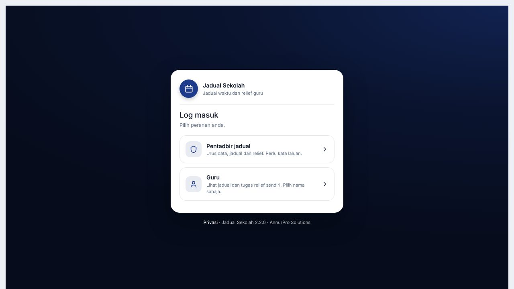
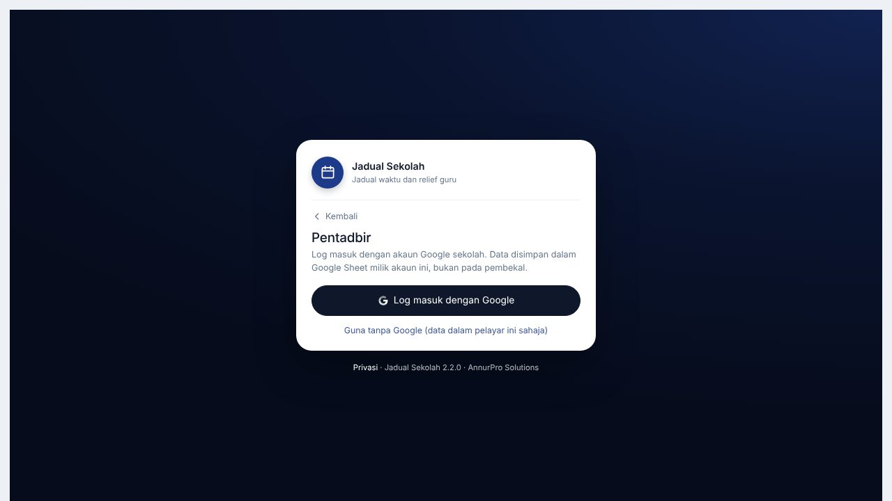
- Klik Log masuk dengan Google dan pilih akaun sekolah. Benarkan akses yang diminta. Sistem hanya boleh membuka fail yang dicipta oleh sistem ini dalam Google Drive anda, bukan fail lain.
- Akaun baharu terus mendapat percubaan percuma 14 hari dengan semua ciri dibuka.
- Isi nama sekolah, pilih warna tema, dan muat naik logo (pilihan).
- Tetapkan kata laluan pentadbir (sekurang-kurangnya 6 aksara) dan taip sekali lagi untuk sahkan.
- Pilih cara mula: data contoh (untuk belajar dahulu), mula kosong, atau sekolah saya guna aSc sebelum ini (terus ke import Excel aSc).
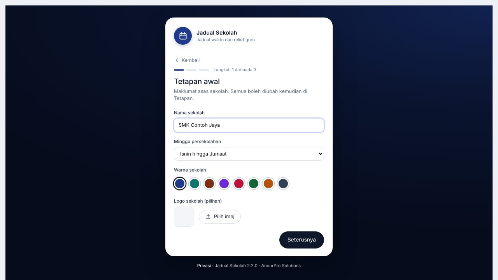
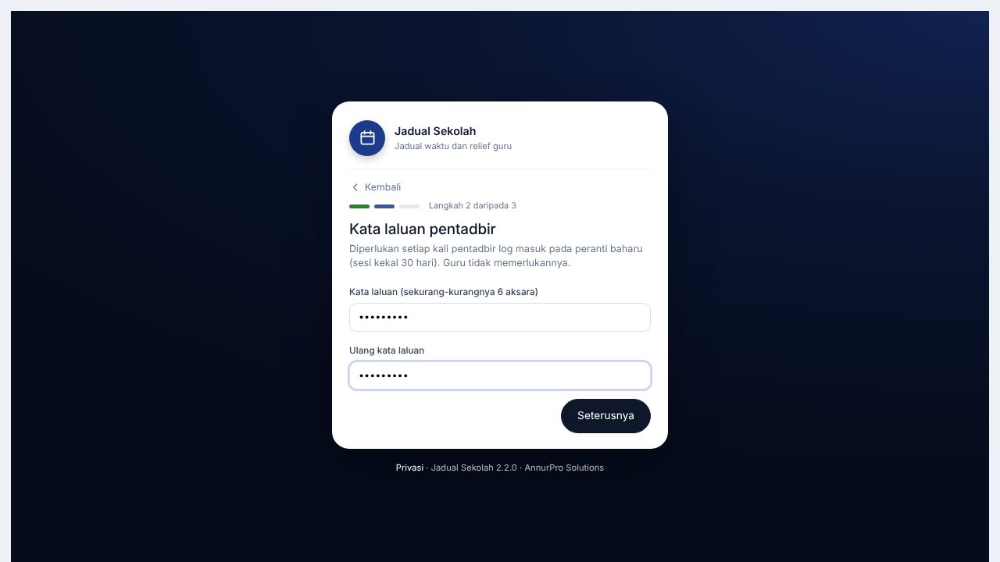
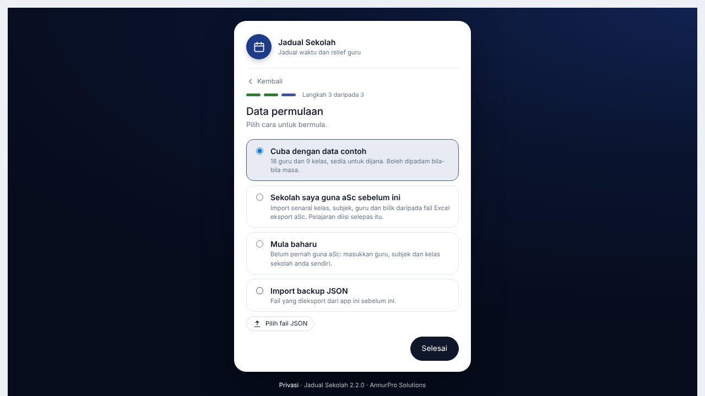
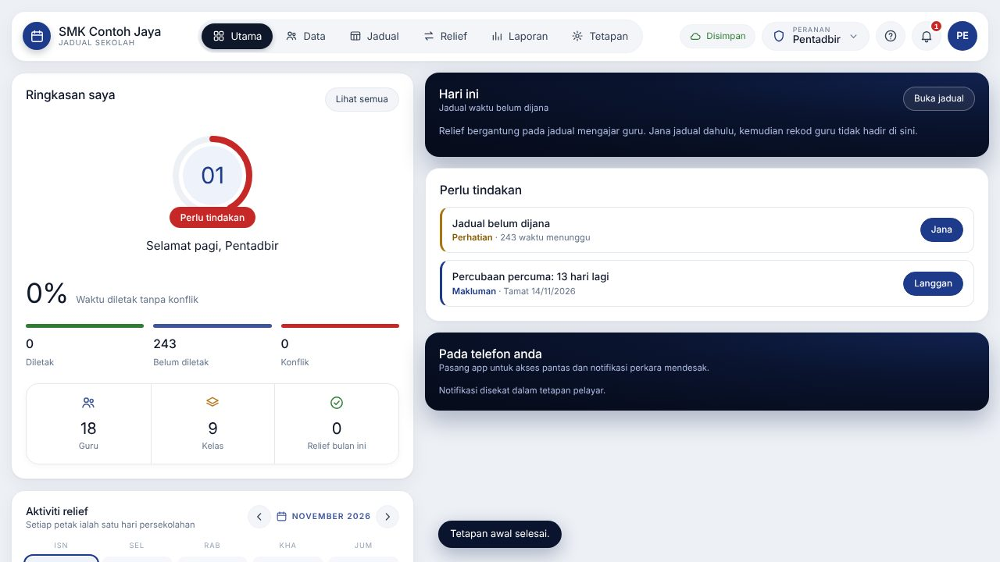
Log masuk seterusnya dan di peranti lain
- Peranti yang sama: sesi kekal sehingga 30 hari. Selepas itu sistem minta kata laluan pentadbir semula.
- Peranti lain (contoh laptop di rumah): buka annurtimetable.com, pilih Pentadbir jadual, log masuk dengan akaun Google yang sama. Sistem cari Sheet sekolah anda dan muat turun data.
- Log keluar: klik nama peranan di bar atas, kemudian Log keluar. Gunakan ini di komputer yang dikongsi.
4. Mengenali skrin utama
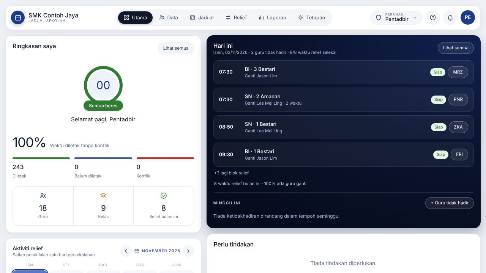
- Menu atas: Utama, Data, Jadual, Relief, Laporan, Tetapan. Di telefon, menu berada di bahagian bawah skrin.
- Ringkasan saya: peratus waktu diletak tanpa konflik, bilangan guru, kelas, dan relief bulan ini.
- Hari ini: kelas yang berjalan sekarang dan guru yang tidak hadir, dengan guru gantinya.
- Perlu tindakan: senarai perkara penting, contoh relief belum diagih, jadual belum lengkap, backup lama, langganan hampir tamat. Klik item untuk terus ke halaman berkaitan.
- Status simpanan (bar atas): Disimpan, Belum disimpan, Menyimpan, Sambung semula (log masuk Google semula) atau Konflik data.
- Loceng: notis dan peringatan. Ikon ?: halaman Bantuan.
5. Tetapan sekolah dan waktu
Tab Sekolah
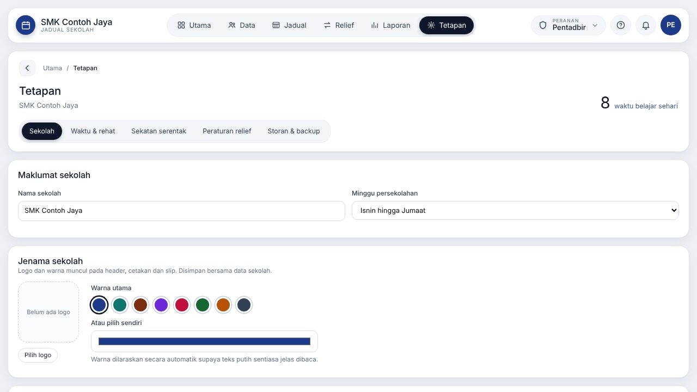
Isi nama sekolah, minggu persekolahan (Isnin hingga Jumaat, atau Ahad hingga Khamis untuk Kedah, Kelantan, Terengganu dan Johor), warna tema dan logo. Nama dan logo dipapar pada cetakan jadual dan paparan guru.
Tab Waktu & rehat
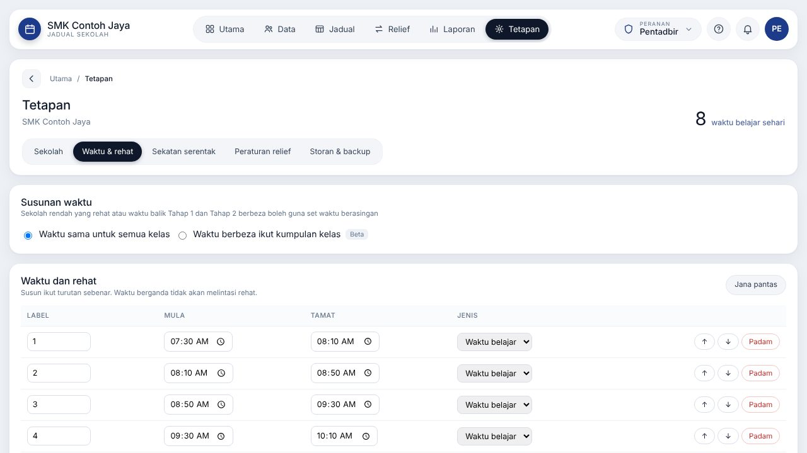
- Klik Jana waktu untuk bina senarai sekaligus: masa mula, tempoh setiap waktu (contoh 30 atau 40 minit), bilangan waktu dan kedudukan rehat.
- Laras satu-satu jika perlu: ubah masa, tukar jenis (waktu pelajaran atau rehat), susun naik turun, tambah atau padam.
- Perubahan disimpan automatik. Tiada butang Simpan.
Waktu berbeza ikut kumpulan kelas (Tahap 1 dan Tahap 2) · Beta
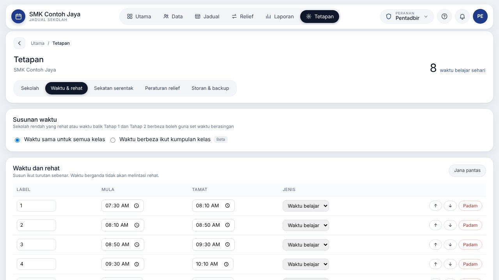
Untuk sekolah rendah yang waktu Tahap 1 dan Tahap 2 tidak sama:
- Pilih Waktu berbeza ikut kumpulan kelas.
- Set pertama (contoh "Set utama") ialah waktu asal. Klik + Tambah set waktu untuk set kedua dan isi waktunya.
- Tetapkan set waktu bagi setiap kelas: guna butang tetapan ikut tahun (contoh Tahun 1 hingga 3 ke set Tahap 1), atau pilih dalam borang kelas.
Penjana jadual dan modul relief mengira masa sebenar (jam), jadi guru yang mengajar di kedua-dua tahap tidak akan bertembung walaupun waktu bermula dan tamat pada jam berbeza.
Tab lain di Tetapan
- Sekatan serentak: lihat Bab 9.
- Peraturan relief: lihat Bab 12.
- Storan & backup: Google Sheets, pautan guru, export, arkib. Lihat Bab 14 hingga Bab 16.
6. Data guru, subjek, kelas dan bilik

Halaman Data ada lima tab: Guru, Subjek, Kelas, Bilik, Pelajaran. Isi mengikut turutan ini kerana Pelajaran memerlukan data tab lain.
Tambah atau edit satu rekod
Klik Tambah guru (atau subjek/kelas/bilik), atau Edit pada baris sedia ada.
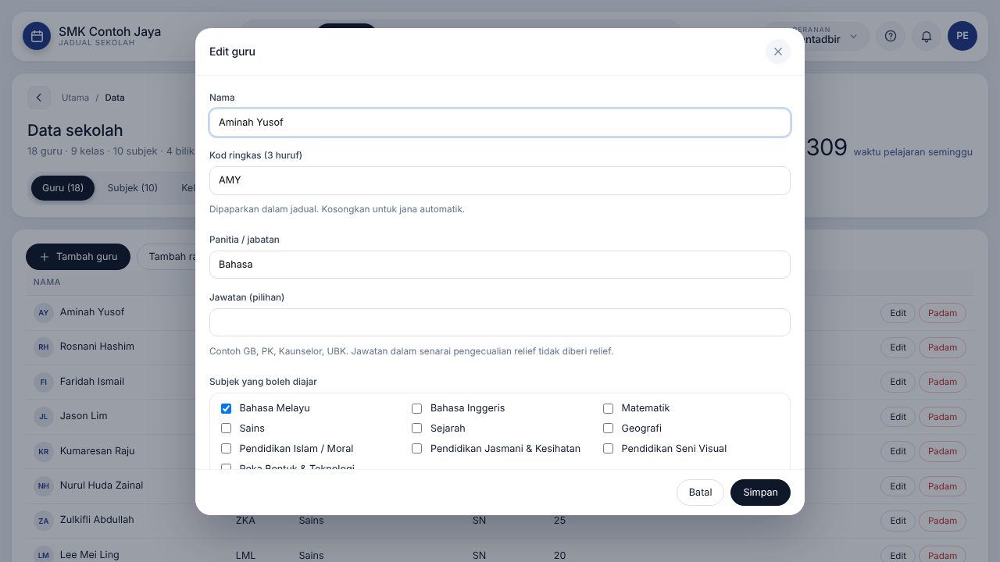
| Medan guru | Kegunaan |
|---|---|
| Nama, Kod | Kod pendek (2 hingga 4 huruf) dipapar dalam petak jadual. |
| Panitia | Untuk sekatan ikut panitia dan laporan. |
| Jawatan | Contoh GPK, Kaunselor. Boleh dikecualikan daripada relief di Peraturan relief. |
| Had waktu sehari / seminggu | Penjana tidak akan melebihi had ini. |
| Waktu tidak boleh mengajar | Klik petak waktu untuk tanda (contoh guru separuh masa, tugas luar tetap). |
| Dikecualikan daripada tugas relief | Guru ini tidak akan dicadangkan sebagai guru ganti (contoh pentadbir). |
Tambah ramai sekaligus (tampal dari Excel)
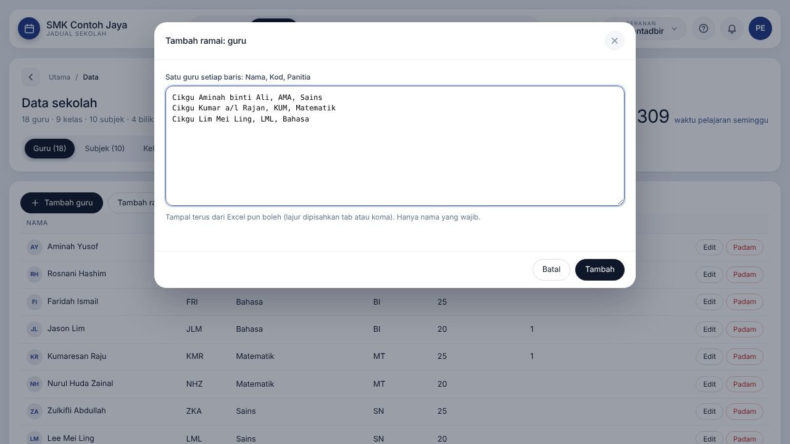
- Klik Tambah ramai sekaligus.
- Tampal senarai. Satu rekod setiap baris. Untuk guru:
Nama, Kod, Panitia. Untuk kelas:Nama, Tingkatan. Lajur boleh dipisahkan koma atau tab (tampal terus dari Excel). Hanya nama yang wajib. - Klik Tambah. Kod yang kosong dijana automatik daripada nama.
Import dari aSc / Excel
Sekolah yang pernah guna aSc Timetables boleh bawa masuk senarai guru, subjek, kelas dan bilik terus dari fail Excel eksport aSc.
- Di halaman Data, klik Import dari aSc / Excel dan pilih fail
.xlsx. - Sistem tunjuk pratonton: berapa guru, subjek, kelas dan bilik dijumpai.
- Pilih Tambah (gabung dengan data sedia ada, nama sama tidak diduplikasi) atau Ganti (padam data lama dan guna data import), kemudian sahkan.
- Semak tab Pelajaran selepas import. Isi atau betulkan beban mengajar sebelum jana jadual.
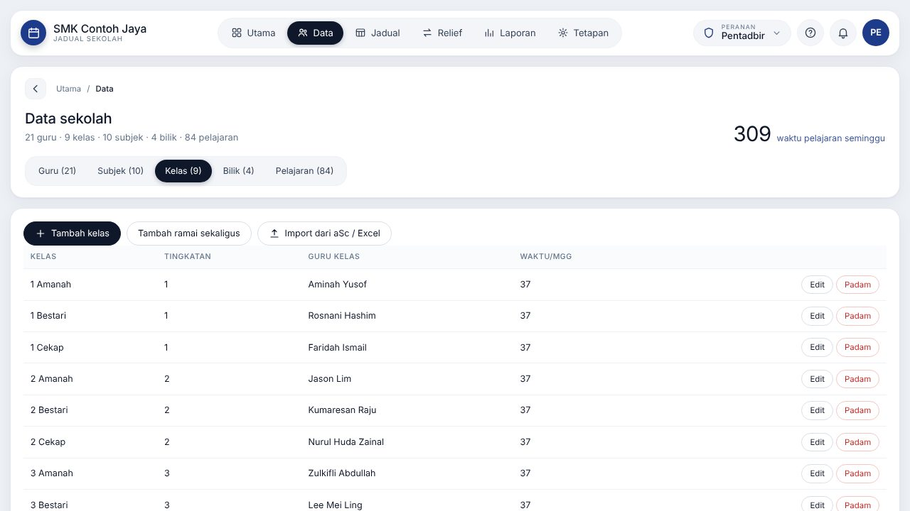
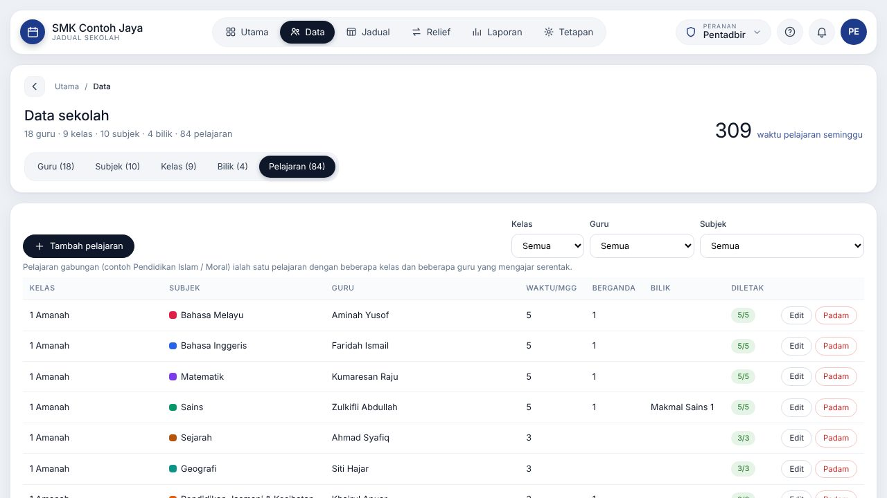
Subjek: nama, kod, warna petak, dan tanda subjek berat (penjana cuba elak subjek berat bertimbun dalam sehari). Bilik: makmal, bengkel, bilik komputer dan sebagainya. Bilik hanya perlu diisi jika pelajaran tertentu mesti di bilik khas.
7. Pelajaran dan beban mengajar
Pelajaran ialah asas jadual. Setiap baris menyatakan: subjek, kelas, guru, bilangan waktu seminggu, dan berapa daripadanya waktu berganda (2 waktu berturut-turut).
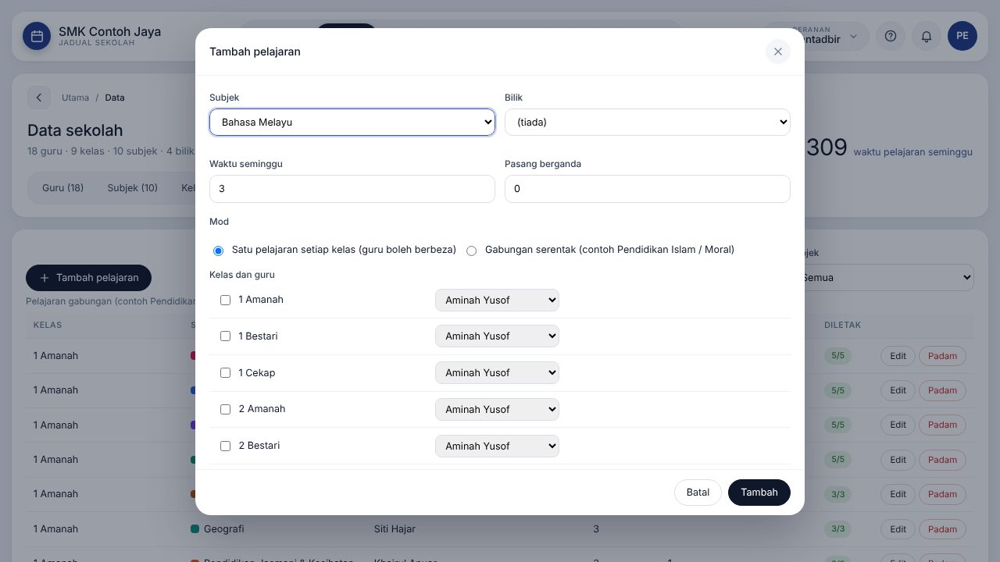
- Klik Tambah pelajaran.
- Pilih subjek. Pilih kelas (boleh lebih daripada satu untuk kelas gabungan, contoh Pendidikan Islam dan Pendidikan Moral, atau PJ beberapa kelas serentak).
- Pilih guru (boleh lebih daripada satu untuk pengajaran berpasangan).
- Isi waktu seminggu dan bilangan waktu berganda. Pilih bilik jika perlu bilik khas.
- Simpan. Lajur jumlah di atas menunjukkan beban setiap guru dan amaran jika melebihi had.
8. Jana dan laras jadual
- Buka halaman Jadual, klik Jana jadual.
- Pilih usaha pengoptimuman: Cepat untuk cubaan, Biasa untuk kebanyakan sekolah, pilihan lebih lama untuk sekolah besar yang mahu jadual lebih kemas.
- Klik Mula. Jadual siap dalam beberapa saat.
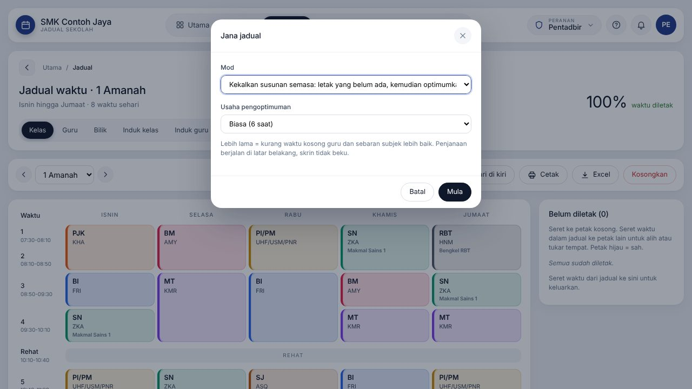

Penjana mematuhi: tiada guru, kelas atau bilik bertembung; had waktu guru; waktu guru tidak boleh mengajar; sekatan serentak; waktu berganda; dan cuba mengurangkan waktu kosong guru di tengah hari.
Laras sendiri dengan seret dan lepas
- Seret satu petak pelajaran ke petak lain. Petak hijau bermaksud boleh diletak tanpa konflik. Lepaskan atas petak berisi untuk tukar tempat.
- Klik ikon kunci pada petak supaya waktu itu tidak diubah bila jadual dijana semula.
- Panel Belum diletak di sisi menyenaraikan pelajaran yang tiada tempat. Seret dari panel ke jadual, atau seret petak ke panel untuk keluarkan dari jadual.
- Kosongkan memadam semua penempatan (pelajaran tidak dipadam).
Paparan
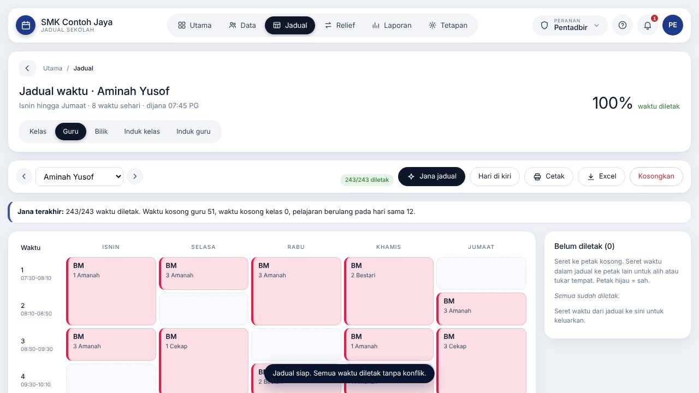

Tab di atas jadual: Kelas, Guru, Bilik, Induk kelas, Induk guru. Guna anak panah atau senarai untuk tukar kelas/guru. Butang paksi menukar susunan (hari di atas atau hari di sisi).
9. Sekatan serentak
Sekatan mengosongkan waktu yang sama untuk sekumpulan guru. Contoh: mesyuarat panitia mingguan, kokurikulum, perhimpunan, atau program tetap.
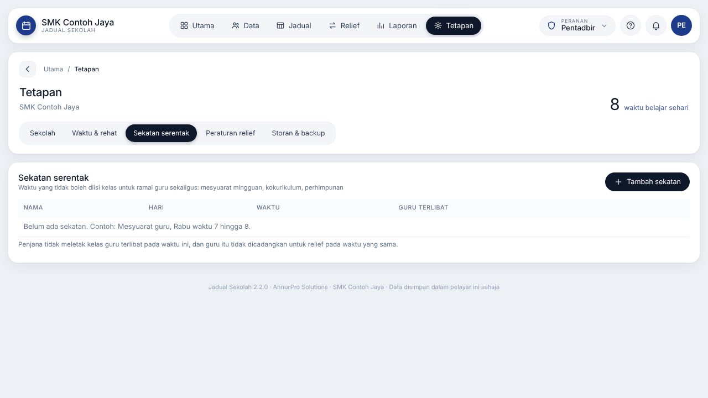
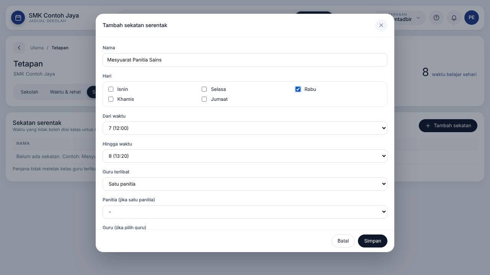
- Tetapan, tab Sekatan serentak, klik Tambah sekatan.
- Isi nama, pilih hari, dan julat waktu (dari waktu ke, hingga waktu ke).
- Pilih siapa terlibat: semua guru, satu panitia, atau guru tertentu.
- Simpan, kemudian jana semula jadual supaya sekatan baharu dipatuhi.
Guru yang terlibat juga tidak akan dicadangkan sebagai guru ganti pada waktu sekatan.
10. Cetak dan muat turun Excel
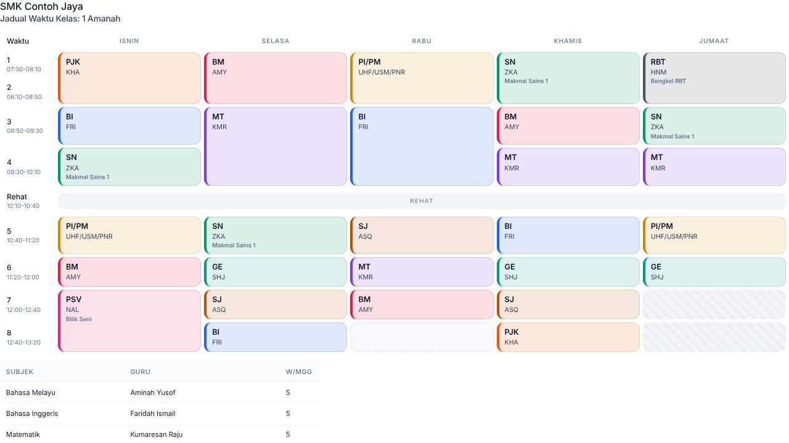
- Cetak: cetak jadual yang sedang dipapar. Pilih "Simpan sebagai PDF" dalam dialog cetak untuk dapatkan fail PDF.
- Cetak semua: semua kelas atau semua guru sekaligus, satu halaman setiap satu.
- Excel: muat turun jadual paparan semasa, atau semua jadual dalam satu fail (satu tab untuk setiap guru, kelas atau bilik).
- Di halaman Laporan, ada pilihan cetak dan muat turun ikut Guru, Kelas atau Bilik sahaja.
11. Relief harian
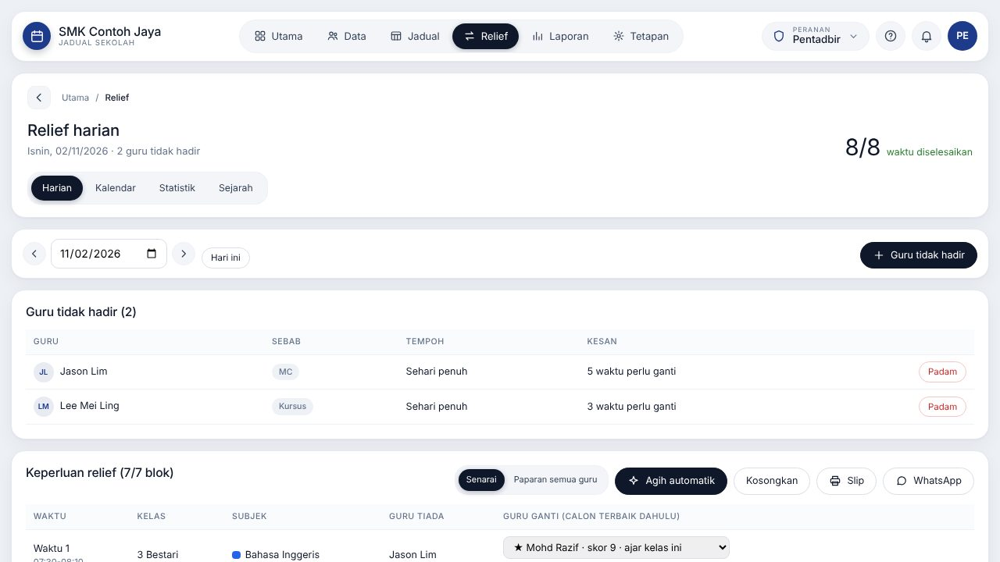
Rekod guru tidak hadir
- Buka Relief, pastikan tarikh betul (anak panah untuk tukar hari, Hari ini untuk kembali).
- Klik Guru tidak hadir. Pilih guru, sebab (MC, Cuti Rehat, Cuti Kecemasan, Kursus / Bengkel, Urusan Rasmi, Cuti Bersalin, Lain-lain), dan tempoh.
- Tempoh: sehari penuh, atau waktu tertentu sahaja (contoh waktu 3 hingga 5). Untuk cuti beberapa hari, isi Hingga tarikh; hujung minggu dilangkau automatik.
- Simpan. Kelas guru itu terus muncul dalam senarai Keperluan relief.
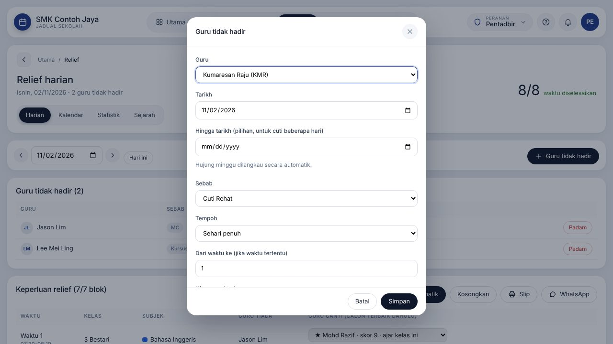
Agih guru ganti
- Klik Agih automatik. Sistem pilih guru yang free pada waktu itu, mematuhi peraturan relief sekolah, dan mengutamakan guru yang paling kurang relief bulan ini.
- Semak cadangan. Tukar guru ganti melalui menu pilihan pada setiap baris jika perlu.
- Jika guru ganti tidak cukup, pilih gabung untuk letak kelas itu bersama kelas lain yang ada guru.

Hantar dan cetak

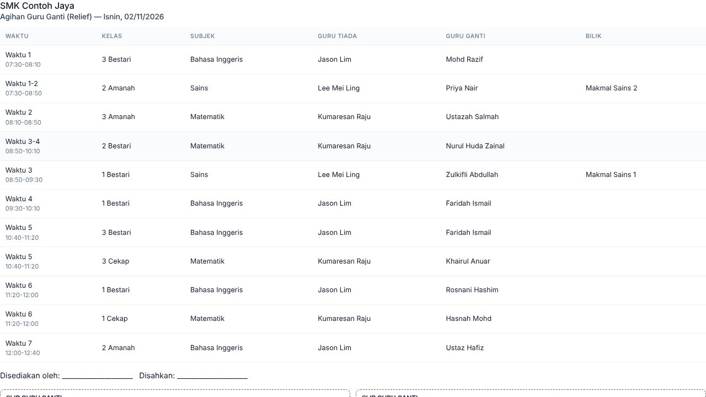
- WhatsApp: salin mesej relief dan tampal dalam kumpulan WhatsApp guru.
- Slip: cetak slip relief untuk papan kenyataan atau bilik guru.
- Guru yang ada pautan guru akan nampak tugas relief mereka sendiri di telefon (lihat Bab 15).
12. Relief lanjutan dan peraturan
Paparan semua guru

Tukar ke Paparan semua guru untuk lihat jadual semua guru pada hari itu dalam satu skrin. Petak yang boleh diklik ialah guru yang layak jadi guru ganti pada waktu tersebut. Klik untuk terus pilih.
Kalendar, Statistik, Sejarah
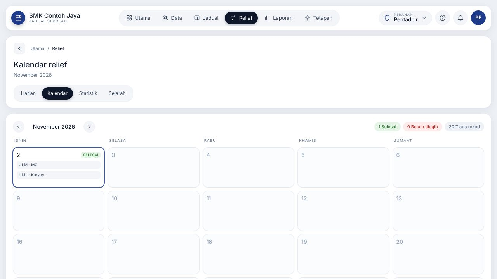
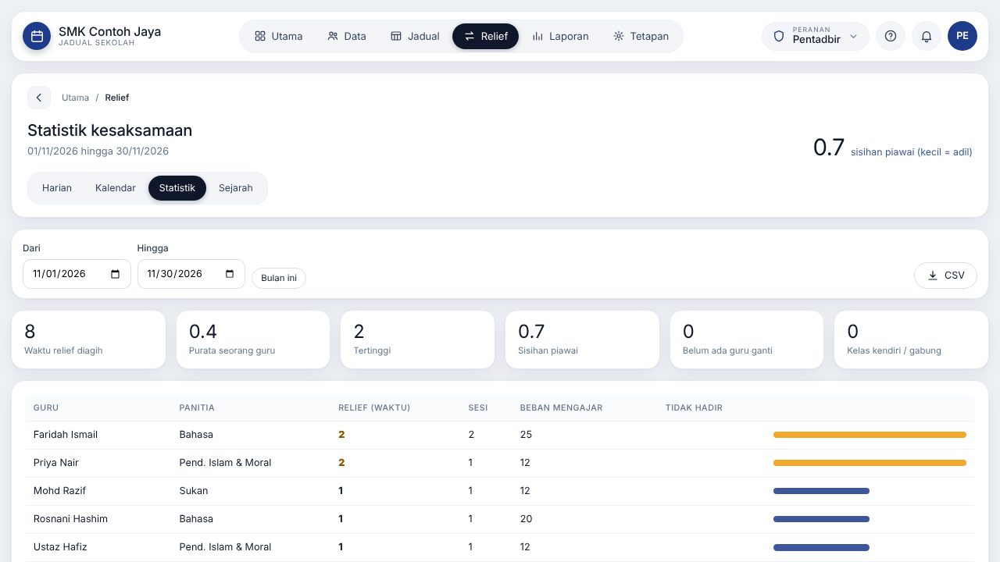
- Kalendar: semua ketidakhadiran dalam sebulan. Klik tarikh untuk buka relief hari itu.
- Statistik: jumlah waktu relief setiap guru bagi julat tarikh. Sisihan piawai yang kecil bermaksud agihan adil.
- Sejarah: semua rekod relief. Muat turun sebagai CSV untuk laporan.
Peraturan relief sekolah
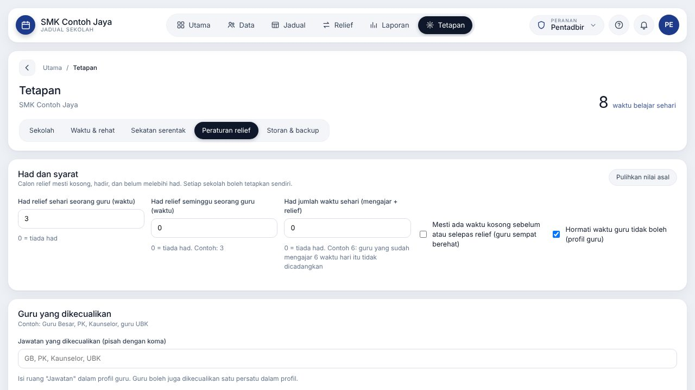
| Peraturan | Maksud |
|---|---|
| Had relief sehari / seminggu | Bilangan maksimum waktu relief bagi seorang guru. 0 bermaksud tiada had. |
| Had jumlah waktu sehari | Waktu mengajar + relief tidak melebihi nombor ini. |
| Perlu rehat antara waktu | Guru tidak diberi relief jika waktu sebelum dan selepas sudah mengajar. |
| Jawatan dikecualikan | Contoh GPK, Kaunselor. Ditulis dipisahkan koma. |
| Hormati waktu guru tidak boleh | Waktu tidak boleh mengajar dalam profil guru turut dikira untuk relief. |
Sekatan serentak sentiasa dipatuhi. Klik Pulihkan nilai asal untuk kembali ke nilai lalai.
13. Laporan
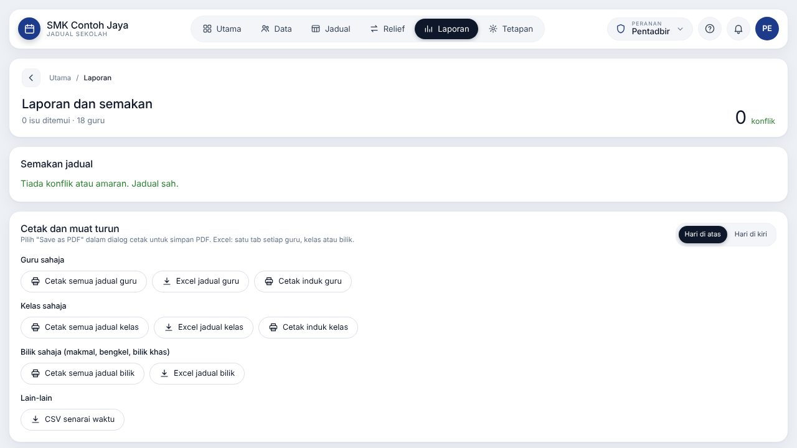
- Semakan jadual: senarai isu seperti pelajaran belum diletak atau guru melebihi had.
- Cetak dan muat turun ikut Guru, Kelas atau Bilik sahaja (Excel atau cetak).
- Beban mengajar setiap guru dan ringkasan relief.
14. Google Sheets dan backup
Data sekolah disimpan di dua tempat: dalam pelayar peranti anda, dan dalam Google Sheet milik sekolah di Google Drive akaun pentadbir. Kami (pembekal) tidak menyimpan data jadual atau relief anda.
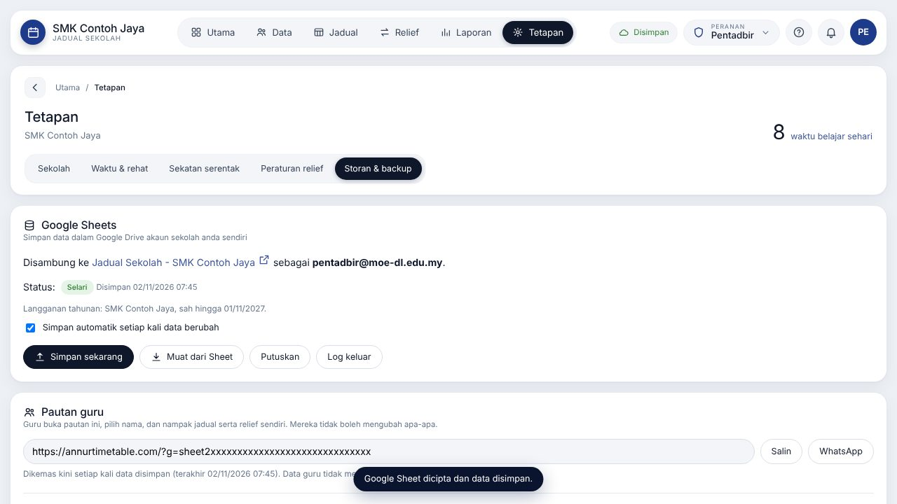
- Tetapan, tab Storan & backup. Klik Log masuk Google jika belum.
- Sistem semak lesen. Klik Cipta Google Sheet untuk simpanan pertama.
- Selepas itu, setiap perubahan disimpan automatik (status Disimpan di bar atas). Simpan sekarang dan Muat dari Sheet ada untuk kawalan manual.
Status simpanan
| Status | Maksud dan tindakan |
|---|---|
| Disimpan | Data terkini sudah ada dalam Sheet. |
| Belum disimpan / Menyimpan | Perubahan sedang dihantar. Tunggu sebentar. |
| Sambung semula | Sesi Google tamat (biasanya selepas sejam). Klik untuk log masuk Google semula. Data tidak hilang. |
| Konflik data | Sheet diubah dari peranti lain. Pilih sama ada guna data Sheet atau data peranti ini. Sistem tidak akan menulis ganti secara senyap. |
| Tiada lesen | Percubaan atau langganan tamat. Lihat Bab 17. |
Backup tambahan
- Export JSON: muat turun salinan penuh data ke komputer. Import JSON untuk pulihkan.
- Sistem mengingatkan di halaman Utama jika backup sudah lama.
15. Pautan guru dan paparan telefon
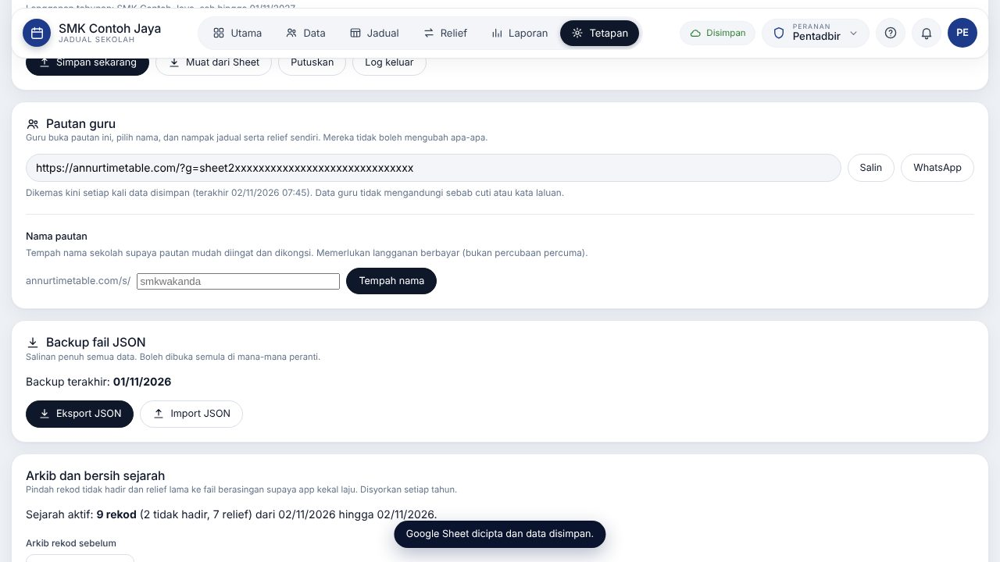
Selepas data disimpan ke Google Sheets, sistem cipta satu Sheet Data Guru berasingan (baca sahaja, tanpa kata laluan atau data peribadi sensitif) dan satu pautan guru.
- Tetapan, Storan & backup, bahagian Pautan guru. Klik Salin atau WhatsApp.
- Kongsi dalam kumpulan WhatsApp guru.
- Guru buka pautan, pilih nama sendiri, dan terus nampak jadual dan relief sendiri.
Nama pautan yang mudah (langganan berbayar)
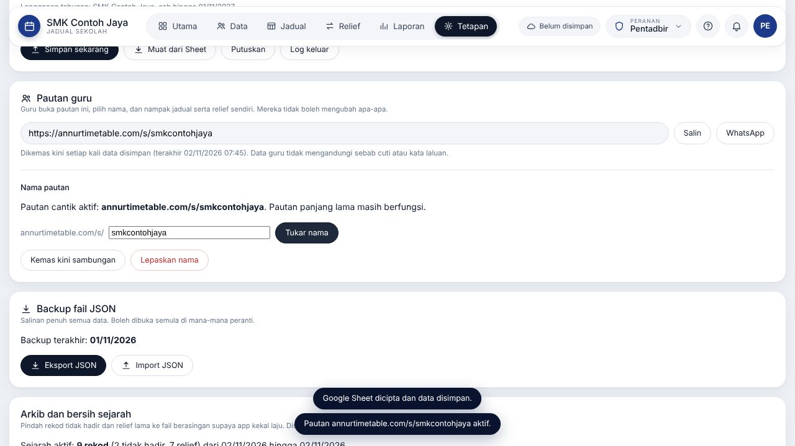
Pelanggan berbayar boleh pilih nama pautan seperti annurtimetable.com/s/smkcontohjaya. Huruf kecil, nombor dan sengkang sahaja, 3 hingga 30 aksara. Pertukaran nama kali pertama percuma, selepas itu sekali setiap 30 hari. Pautan panjang lama masih berfungsi.
Apa yang guru nampak
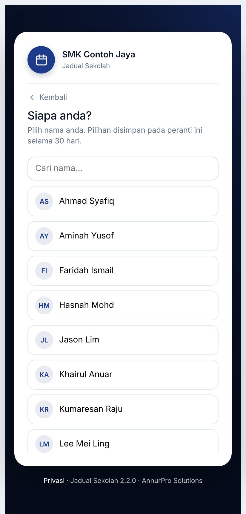


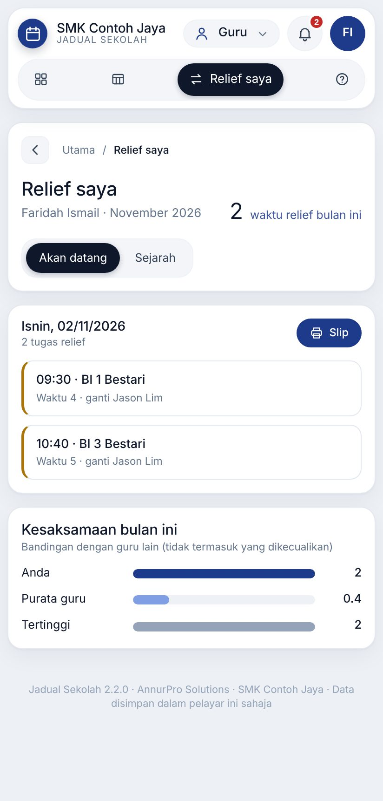
- Guru hanya boleh membaca. Mereka tidak boleh mengubah data.
- Tambah ke skrin utama (Chrome: menu ⋮, "Add to Home screen"; Safari: butang Kongsi, "Add to Home Screen") supaya pautan dibuka seperti aplikasi.
- Hidupkan notifikasi di halaman Utama guru untuk dimaklumkan bila ada tugas relief baharu.
- Data guru dikemas kini setiap kali pentadbir menyimpan ke Google Sheets.
16. Arkib sejarah relief
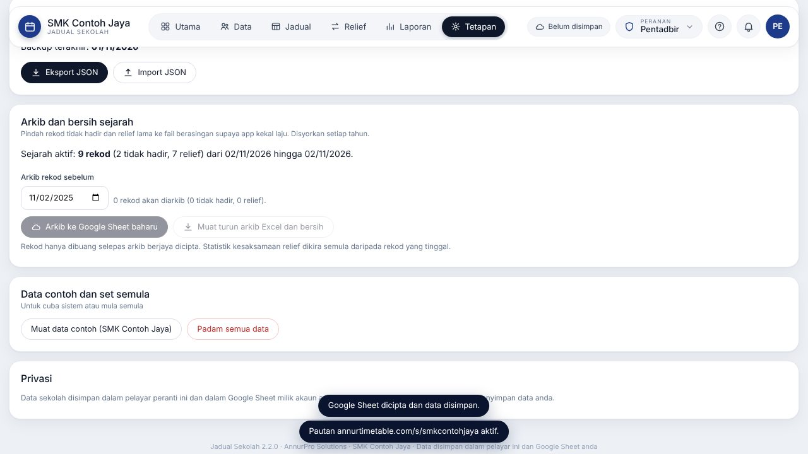
Selepas setahun, rekod relief dan ketidakhadiran bertambah banyak. Arkib memindahkan rekod lama ke fail berasingan supaya sistem kekal laju.
- Tetapan, Storan & backup, bahagian Arkib dan bersih sejarah.
- Pilih tarikh potong. Cadangan lalai: 1 Januari tahun semasa (semua rekod tahun lepas).
- Pilih simpan ke Google Sheet arkib baharu (tab Ringkasan, TidakHadir, Relief) atau muat turun Excel.
- Selepas arkib berjaya, sistem buang rekod lama daripada data aktif.
Halaman Utama mengingatkan bila ada rekod lebih 12 bulan.
17. Langganan dan lesen
| Pelan | Harga | Catatan |
|---|---|---|
| Percubaan | Percuma 14 hari | Bermula automatik kali pertama log masuk Google. Semua ciri dibuka. |
| Bulanan | RM20 sebulan | Boleh bayar setiap bulan atau melalui auto-debit jika dipilih dalam borang. |
| Tahunan | RM200 setahun | Jimat RM40 berbanding bulanan. |
Cara melanggan atau memperbaharui
- Klik Langgan (pada notis di halaman Utama, atau di Tetapan, Storan & backup). Borang bayaran BCL dibuka di tab baharu.
- Pilih Bulanan atau Tahunan dan kuantiti (contoh 3 untuk 3 bulan).
- Dalam borang, isi e-mel Google yang SAMA dengan e-mel yang anda guna untuk log masuk Annur Time Table.
- Bayar melalui FPX atau kaedah lain yang disediakan.
- Lesen aktif automatik dalam beberapa minit. Muat semula halaman, atau log masuk Google semula di Tetapan, Storan & backup.
Pembaharuan awal tidak merugikan: tempoh baharu disambung dari tarikh tamat semasa.
Notis lesen di halaman Utama
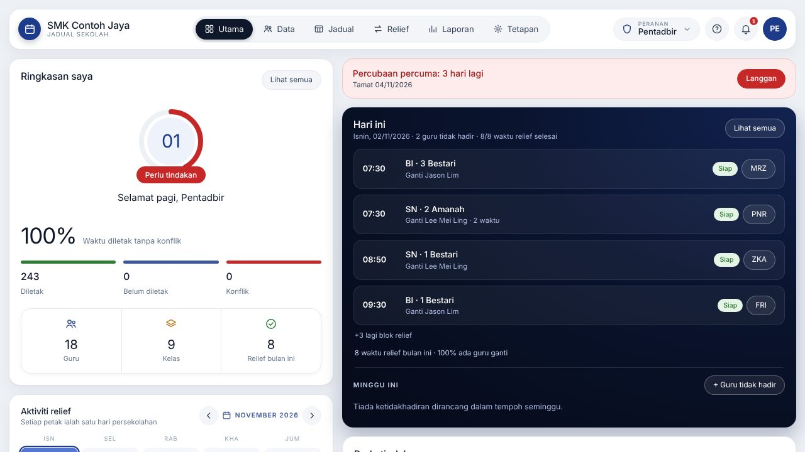
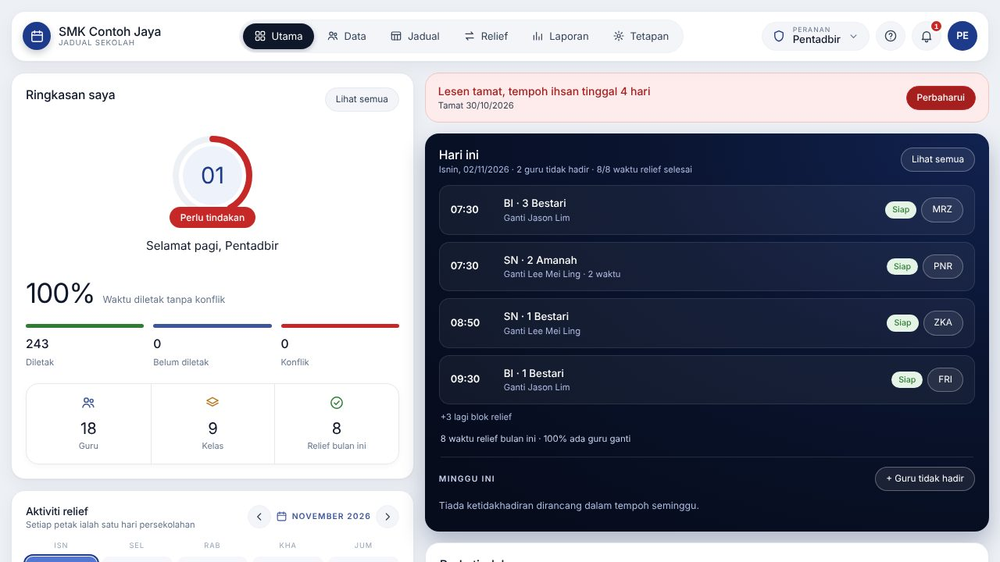
| Keadaan | Apa berlaku |
|---|---|
| Sepanjang percubaan | Baki hari dipapar di Perlu tindakan. Pada 3 hari terakhir, banner merah muncul di atas halaman Utama. |
| Langganan, 14 hari terakhir | Notis peringatan dengan butang Perbaharui. Banner merah pada 3 hari terakhir. |
| Langganan tamat, 7 hari pertama | Tempoh ihsan: semua masih berfungsi, notis merah setiap hari. (Percubaan tiada tempoh ihsan.) |
| Tamat sepenuhnya | Simpanan ke Google Sheets berhenti, jadi pautan guru tidak lagi menerima kemas kini, dan nama pautan /s/ tidak berfungsi. Data anda tidak dipadam: kekal dalam pelayar dan dalam Google Sheet sekolah. Perbaharui bila-bila masa untuk sambung semula. |
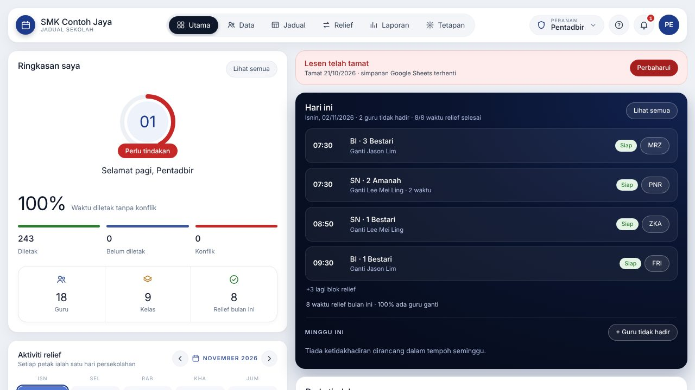
Status lesen, pelan dan tarikh tamat sentiasa dipapar di Tetapan, Storan & backup.
18. Soalan lazim dan masalah biasa
Tetingkap log masuk Google tidak muncul
Pelayar mungkin menyekat popup. Benarkan popup untuk annurtimetable.com (ikon di hujung bar alamat), kemudian cuba lagi.
"Akses disekat" bila log masuk dengan akaun DELIMa
Pentadbir DELIMa negeri atau sekolah mungkin menghadkan app luar. Guna akaun Gmail lain buat sementara. Lesen boleh dipindahkan ke e-mel baharu; hubungi kami.
Status "Sambung semula" muncul
Sesi Google tamat selepas tempoh tertentu (keselamatan Google). Klik butang itu dan log masuk semula. Perubahan anda masih dalam pelayar dan akan disimpan selepas sambung.
Saya terpadam data pelayar (clear browsing data)
Jika data sudah disimpan ke Google Sheets, log masuk semula dengan akaun Google yang sama. Sistem muat semula data dari Sheet. Jika belum pernah disimpan ke Sheets dan tiada Export JSON, data tidak dapat dipulihkan. Sebab itu simpan ke Google Sheets dari awal.
Penjana tidak dapat meletak semua pelajaran
Semak: jumlah waktu seminggu setiap kelas tidak melebihi slot yang ada; guru tidak melebihi had; waktu tidak boleh mengajar dan sekatan tidak terlalu ketat; bilik khas mencukupi. Cuba usaha pengoptimuman lebih tinggi. Pelajaran yang tinggal boleh diseret secara manual dari panel Belum diletak.
Guru tidak nampak kemas kini terbaru
Pastikan status di bar atas pentadbir ialah Disimpan. Minta guru tarik ke bawah atau muat semula halaman. Pastikan juga langganan masih aktif.
Boleh guna di lebih daripada satu komputer?
Boleh. Log masuk dengan akaun Google yang sama. Elakkan dua orang menyunting serentak; jika berlaku, sistem tunjuk dialog konflik dan anda pilih data mana yang hendak dikekalkan.
Boleh import jadual penuh dari aSc?
Buat masa ini import membawa masuk senarai guru, subjek, kelas dan bilik. Beban mengajar diisi di tab Pelajaran, kemudian jadual dijana oleh sistem.
Waktu kelas Tahap 1 dan Tahap 2 berbeza
Guna pilihan Waktu berbeza ikut kumpulan kelas di Tetapan, Waktu & rehat (Bab 5). Ciri ini masih Beta; laporkan kepada kami jika ada yang tidak kena.
19. Privasi dan keselamatan data
- Data jadual dan relief milik sekolah, disimpan dalam pelayar dan dalam Google Sheet di Drive akaun pentadbir. Pembekal tidak menyimpan salinan data tersebut.
- Sistem guna kebenaran Google
drive.file: ia hanya boleh membuka fail yang dicipta sendiri oleh sistem, bukan fail lain dalam Drive anda. - Pelayan lesen hanya menyimpan e-mel log masuk, nama sekolah, pelan dan tarikh tamat. Rekod bayaran diurus oleh BCL (Bayarcash).
- Kata laluan pentadbir disimpan sebagai hash PBKDF2, tidak boleh dibaca semula.
- Sheet Data Guru hanya mengandungi maklumat yang perlu untuk paparan guru (nama, jadual, relief), tanpa kata laluan.
- Dasar privasi penuh: annurtimetable.com/privasi.
20. Senarai video panduan
Setiap video kira-kira satu minit, mengikut turutan kerja sebenar.
21. Hubungi kami
| Saluran | Butiran |
|---|---|
| 011-2087 9149 | |
| E-mel | annurprosolutions@gmail.com |
| Laman | annurtimetable.com |
Bila menghubungi kami, sertakan: nama sekolah, e-mel Google yang digunakan, tangkapan skrin masalah, dan langkah yang dibuat sebelum masalah berlaku.